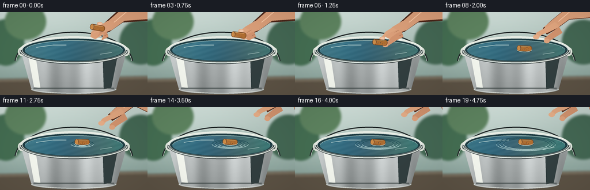
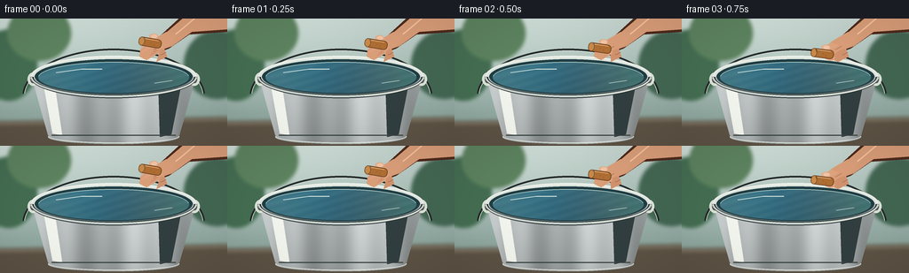
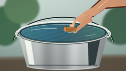
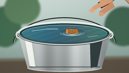

CODING AGENTS AS PIXEL WORLD MODELS
traex/GPT-5.6-Sol · mechanics_0009
点击播放 · 原生 RGB 像素
逐轮保存的候选
回放视频、检查图与代码变化。
每份候选均可单独播放。实际图片检查记录在下方工具轨迹中。
候选 01播放与检查图
点击播放 · 原生 RGB 像素


展开代码变化
--- 上一保存版本
+++ 本次保存版本
@@ -0,0 +1,233 @@
+from pathlib import Path
+import math
+import numpy as np
+from PIL import Image, ImageDraw, ImageFilter
+import artifact_io
+
+# Stable procedural animation: a hand lowers and releases a cork onto water.
+W, H, N, S = 256, 144, 20, 4
+rng = np.random.default_rng(90210)
+
+def scpts(points):
+ return [(int(round(x*S)), int(round(y*S))) for x,y in points]
+def box(b):
+ return tuple(int(round(v*S)) for v in b)
+def width(v): return max(1, int(round(v*S)))
+
+def poly(d, p, **kw): d.polygon(scpts(p), **kw)
+def ell(d, b, **kw):
+ if 'width' in kw: kw['width'] = width(kw['width'])
+ d.ellipse(box(b), **kw)
+def line(d, p, **kw):
+ if 'width' in kw: kw['width'] = width(kw['width'])
+ d.line(scpts(p), **kw)
+def arc(d, b, a0, a1, **kw):
+ if 'width' in kw: kw['width'] = width(kw['width'])
+ d.arc(box(b), a0, a1, **kw)
+def rounded(d, b, r, **kw):
+ if 'width' in kw: kw['width'] = width(kw['width'])
+ d.rounded_rectangle(box(b), radius=width(r), **kw)
+
+def smoothstep(x):
+ x = max(0.0, min(1.0, x)); return x*x*(3-2*x)
+
+def background(frame):
+ # Soft daylight utility-space background with a pale wall and timber floor.
+ hh, ww = H*S, W*S
+ y, x = np.mgrid[0:hh, 0:ww]
+ yy, xx = y/S, x/S
+ top = np.array([198, 213, 207.], float)
+ bot = np.array([139, 164, 156.], float)
+ mix = np.clip(yy/118,0,1)[...,None]
+ a = top*(1-mix)+bot*mix
+ # subtle daylight from upper left
+ glow = 14*np.exp(-((xx-40)**2/(2*85**2)+(yy-10)**2/(2*55**2)))
+ a += glow[...,None]
+ grain = rng.normal(0, .9, (hh,ww,1))
+ a += grain
+ im = Image.fromarray(np.uint8(np.clip(a,0,255)), 'RGB').convert('RGBA')
+ d = ImageDraw.Draw(im, 'RGBA')
+ # out-of-focus garden shapes
+ ell(d, (-22, 12, 42, 93), fill=(69,111,83,55))
+ ell(d, (8, -15, 80, 48), fill=(94,132,96,40))
+ ell(d, (207, 13, 282, 91), fill=(68,104,84,35))
+ # horizontal ledge / floor, blurred slightly
+ poly(d, [(0,116),(256,111),(256,144),(0,144)], fill=(93,83,69,110))
+ line(d, [(0,119),(256,114)], fill=(227,213,184,75), width=1)
+ return im.filter(ImageFilter.GaussianBlur(width(2.0)))
+
+def bucket_base(im, frame):
+ # Back handle sits behind the pail.
+ d = ImageDraw.Draw(im, 'RGBA')
+ arc(d, (25,34,231,143), 184, 356, fill=(35,43,43,145), width=2.2)
+ arc(d, (27,36,229,141), 184, 356, fill=(221,229,222,95), width=.7)
+ # Pail body gradient clipped to tapered metal silhouette.
+ mask = Image.new('L', im.size, 0); md=ImageDraw.Draw(mask)
+ poly(md, [(35,64),(221,64),(202,132),(193,137),(63,137),(54,132)], fill=255)
+ ell(md, (54,126,202,142), fill=255)
+ hh,ww=H*S,W*S; yy,xx=np.mgrid[0:hh,0:ww]; X=xx/S; Y=yy/S
+ base = 168 + 28*np.sin((X-26)/18) + 10*np.sin((X+3)/5.7)
+ shade = -0.34*(Y-65) + 23*np.exp(-((X-124)/40)**2)
+ metal=np.zeros((hh,ww,4),dtype=np.uint8)
+ metal[...,0]=np.clip(base+shade+7,70,225)
+ metal[...,1]=np.clip(base+shade+12,75,230)
+ metal[...,2]=np.clip(base+shade+12,78,230)
+ metal[...,3]=255
+ mimg=Image.fromarray(metal,'RGBA')
+ im.alpha_composite(Image.composite(mimg, Image.new('RGBA',im.size), mask))
+ d=ImageDraw.Draw(im,'RGBA')
+ # vertical galvanized highlights and seams
+ poly(d, [(48,70),(61,72),(70,132),(59,130)], fill=(245,248,240,28))
+ poly(d, [(178,69),(206,65),(193,131),(180,134)], fill=(50,63,64,30))
+ line(d, [(58,132),(198,132)], fill=(59,69,68,120), width=1.2)
+ arc(d, (54,125,202,141), 0, 180, fill=(230,235,227,105), width=1.0)
+ # handle attachment lugs
+ ell(d,(31,61,43,76),fill=(84,94,92,255),outline=(224,230,220,210),width=width(.8))
+ ell(d,(213,61,225,76),fill=(84,94,92,255),outline=(224,230,220,210),width=width(.8))
+ ell(d,(35,65,40,71),fill=(45,53,52,220))
+ ell(d,(216,65,221,71),fill=(45,53,52,220))
+ # outer top rim and inner shadow
+ ell(d,(34,42,222,90),fill=(79,91,90,255),outline=(223,231,224,255),width=width(1.5))
+ ell(d,(39,46,217,86),fill=(32,62,69,255))
+ # water surface gradient is composited into the opening.
+ water_mask=Image.new('L',im.size,0); wd=ImageDraw.Draw(water_mask); ell(wd,(43,49,213,84),fill=255)
+ wav=np.zeros((hh,ww,4),dtype=np.uint8)
+ # turquoise-gray water, gently brighter at left/back
+ phase=frame*.22
+ wr=59 + 8*np.sin((X+phase*8)/25) + 5*(1-(Y-49)/35)
+ wg=108 + 10*np.sin((X+phase*7)/31) + 8*(1-(Y-49)/35)
+ wb=119 + 12*np.sin((X+phase*5)/38) + 10*(1-(Y-49)/35)
+ shimmer=3*np.sin(X*.21+Y*.72+phase)
+ wav[...,0]=np.clip(wr+shimmer,35,120); wav[...,1]=np.clip(wg+shimmer,70,150); wav[...,2]=np.clip(wb+shimmer,80,165); wav[...,3]=255
+ water=Image.fromarray(wav,'RGBA')
+ im.alpha_composite(Image.composite(water,Image.new('RGBA',im.size),water_mask))
+ d=ImageDraw.Draw(im,'RGBA')
+ # back rim catches light; a few quiet surface reflections
+ arc(d,(35,42,221,89),180,360,fill=(238,242,234,245),width=2.1)
+ arc(d,(43,49,213,84),184,354,fill=(179,212,208,125),width=.8)
+ line(d,[(63,61),(92,57),(115,57)],fill=(211,232,226,55),width=1)
+ line(d,[(174,73),(194,70)],fill=(211,232,226,40),width=.8)
+
+def ripple_layer(im, frame, cx, cy):
+ if frame < 7: return
+ d=ImageDraw.Draw(im,'RGBA')
+ age=frame-7
+ # Contact dimple / concentric perspective ellipses, fading as they expand.
+ for k in range(3):
+ r=4.0 + age*4.0 - k*6.0
+ if r <= 2: continue
+ alpha=int(max(0, 120-age*6-k*22))
+ ry=2.0+r*.19
+ arc(d,(cx-r,cy-ry,cx+r,cy+ry),4,176,fill=(198,229,226,alpha),width=.75)
+ arc(d,(cx-r,cy-ry,cx+r,cy+ry),184,356,fill=(24,69,79,int(alpha*.75)),width=.65)
+ if 7 <= frame <= 11:
+ r=3+(frame-7)*1.4
+ ell(d,(cx-r,cy-r*.25,cx+r,cy+r*.25),outline=(228,241,231,max(30,145-(frame-7)*25)),width=width(.7))
+
+def cork_image(angle, seed_shift=0):
+ # Small textured natural cork, rendered oversized then rotated.
+ cw,ch=32*S,18*S
+ layer=Image.new('RGBA',(cw,ch),(0,0,0,0)); d=ImageDraw.Draw(layer,'RGBA')
+ rounded(d,(3,4,29,14),4,fill=(177,111,50,255),outline=(102,60,30,255),width=.8)
+ ell(d,(3,4,10,14),fill=(203,139,72,255),outline=(113,65,32,220),width=.7)
+ # warm top highlight
+ line(d,[(10,5.5),(25,5.5)],fill=(238,181,105,145),width=.8)
+ rr=np.random.default_rng(322+seed_shift)
+ for _ in range(18):
+ x=float(rr.uniform(8,27)); y=float(rr.uniform(6,12)); r=float(rr.uniform(.18,.48))
+ ell(d,(x-r,y-r*.65,x+r,y+r*.65),fill=(91,52,29,int(rr.uniform(90,190))))
+ rot=layer.rotate(angle,resample=Image.Resampling.BICUBIC,expand=True)
+ return rot
+
+def paste_cork(im, cx, cy, angle, frame, submerged=False):
+ # soft contact shadow, then body; front water glint hides the lowest edge.
+ d=ImageDraw.Draw(im,'RGBA')
+ if submerged:
+ ell(d,(cx-13,cy+2,cx+13,cy+6),fill=(22,61,70,85))
+ c=cork_image(angle)
+ im.alpha_composite(c,(int((cx)*S-c.width/2),int((cy)*S-c.height/2)))
+ if submerged:
+ d=ImageDraw.Draw(im,'RGBA')
+ arc(d,(cx-13,cy-2,cx+13,cy+6),2,178,fill=(223,239,229,140),width=.65)
+
+def draw_hand(im, cork_x, cork_y, frame, released=False):
+ # Skin shadow first, then forearm/palm/fingers. Designed as a clear precision pinch.
+ d=ImageDraw.Draw(im,'RGBA')
+ if not released:
+ # hand offset tracks cork before contact
+ hx,hy=cork_x,cork_y
+ # forearm entering from top-right
+ poly(d,[(257,-9),(210,-8),(184,16),(169,29),(173,40),(190,34),(213,18),(256,15)],fill=(79,42,28,55))
+ poly(d,[(258,-12),(216,-9),(188,15),(173,27),(177,37),(194,31),(216,15),(258,12)],fill=(218,158,121,255))
+ line(d,[(221,-2),(201,15),(185,27)],fill=(247,197,161,110),width=1.5)
+ # palm bridge
+ poly(d,[(187,15),(170,25),(158,35),(157,43),(165,47),(177,40),(191,30),(199,18)],fill=(220,160,122,255))
+ # index finger comes down to cork upper edge
+ poly(d,[(177,30),(169,34),(158,39),(cork_x+7,cork_y-6),(cork_x+2,cork_y-8),(157,34),(168,27)],fill=(224,166,128,255))
+ ell(d,(cork_x-1,cork_y-10,cork_x+9,cork_y-4),fill=(231,175,137,255))
+ # thumb braces lower/right side
+ poly(d,[(185,34),(178,36),(168,43),(cork_x+8,cork_y+4),(cork_x+12,cork_y+7),(176,49),(188,43)],fill=(211,148,111,255))
+ ell(d,(cork_x+5,cork_y+2,cork_x+14,cork_y+8),fill=(225,166,127,255))
+ # nails and creases
+ ell(d,(cork_x+1,cork_y-9,cork_x+8,cork_y-5),fill=(244,199,170,150))
+ line(d,[(173,35),(180,31)],fill=(131,77,55,80),width=.6)
+ line(d,[(181,41),(187,38)],fill=(128,72,52,70),width=.6)
+ else:
+ # Open fingers retreat rapidly toward the top-right after release.
+ u=smoothstep((frame-8)/6)
+ ox=27*u; oy=-30*u
+ # shadow silhouette
+ poly(d,[(258,-12),(216+ox,-8+oy),(188+ox,15+oy),(174+ox,28+oy),(181+ox,39+oy),(198+ox,29+oy),(220+ox,13+oy),(258,10)],fill=(91,47,31,45))
+ poly(d,[(258,-13),(218+ox,-9+oy),(190+ox,14+oy),(177+ox,25+oy),(182+ox,36+oy),(198+ox,28+oy),(220+ox,12+oy),(258,9)],fill=(220,160,122,255))
+ # two relaxed, separated fingertips
+ poly(d,[(195+ox,17+oy),(182+ox,25+oy),(164+ox,35+oy),(159+ox,42+oy),(164+ox,46+oy),(171+ox,40+oy),(187+ox,33+oy),(203+ox,25+oy)],fill=(225,166,127,255))
+ ell(d,(157+ox,39+oy,168+ox,47+oy),fill=(230,174,136,255))
+ poly(d,[(202+ox,25+oy),(191+ox,34+oy),(177+ox,45+oy),(177+ox,51+oy),(183+ox,53+oy),(190+ox,47+oy),(208+ox,36+oy)],fill=(210,147,110,255))
+ ell(d,(176+ox,46+oy,186+ox,54+oy),fill=(222,162,124,255))
+ line(d,[(221+ox,-1+oy),(201+ox,16+oy)],fill=(247,197,161,100),width=1.4)
+
+def front_rim(im):
+ d=ImageDraw.Draw(im,'RGBA')
+ # front lip overlays water/object contact for depth.
+ arc(d,(34,42,222,90),0,180,fill=(41,50,51,225),width=4.0)
+ arc(d,(34,42,222,89),2,178,fill=(205,215,210,255),width=2.2)
+ arc(d,(39,46,217,86),2,178,fill=(90,107,106,220),width=.9)
+ # bright left glint
+ arc(d,(35,43,221,89),15,73,fill=(245,246,235,180),width=.65)
+
+def render(frame):
+ im=background(frame)
+ bucket_base(im,frame)
+ # Cork path: controlled descent, release, damped buoyant bob and tiny drift.
+ if frame <= 7:
+ q=smoothstep(frame/7)
+ cx=169+(142-169)*q
+ cy=27+(59-27)*q
+ angle=-10+7*q
+ released=False
+ else:
+ age=frame-8
+ cx=142 + age*.24
+ cy=61.0 + 2.2*math.exp(-age/4.5)*math.cos(age*1.45)
+ angle=-3 + 2.2*math.exp(-age/7)*math.sin(age*.75)
+ released=True
+ if frame>=7:
+ ripple_layer(im,frame,cx,64)
+ # Prior to release hand is behind the cork; after release hand stays behind it too.
+ draw_hand(im,cx,cy,frame,released=released)
+ paste_cork(im,cx,cy,angle,frame,submerged=(frame>=7))
+ front_rim(im)
+ # Very gentle overall vignette for photographic depth.
+ arr=np.asarray(im.convert('RGB')).astype(np.float32)
+ hh,ww=arr.shape[:2]; yy,xx=np.mgrid[0:hh,0:ww]
+ vig=1-0.10*np.clip(((xx-ww/2)/(ww*.72))**2+((yy-hh/2)/(hh*.80))**2,0,1)
+ arr*=vig[...,None]
+ out=Image.fromarray(np.uint8(np.clip(arr,0,255))).resize((W,H),Image.Resampling.LANCZOS)
+ return np.asarray(out,dtype=np.uint8)
+
+def main():
+ frames=np.stack([render(i) for i in range(N)],axis=0)
+ artifact_io.save(frames,Path(__file__).resolve().parent)
+
+if __name__=='__main__':
+ main()
可观测工具轨迹
实际执行的命令与返回图片。
命令 1exit 0
/bin/bash -lc "cat prompt.txt && printf '\\n---RULES---\\n' && cat GENERATION_RULES.md && printf '\\n---SPEC---\\n' && cat task_spec.json"
命令 2exit 0
/bin/bash -lc "find . -maxdepth 2 -type f -printf '%p\\n' | sort"
命令 3exit 0
/bin/bash -lc 'cat artifact_io.py'
命令 4exit 1
/bin/bash -lc "cat > generate.py <<'PY'
from pathlib import Path
import math
import numpy as np
from PIL import Image, ImageDraw, ImageFilter
import artifact_io
# Stable procedural animation: a hand lowers and releases a cork onto water.
W, H, N, S = 256, 144, 20, 4
rng = np.random.default_rng(90210)
def scpts(points):
return [(int(round(x*S)), int(round(y*S))) for x,y in points]
def box(b):
return tuple(int(round(v*S)) for v in b)
def width(v): return max(1, int(round(v*S)))
def poly(d, p, **kw): d.polygon(scpts(p), **kw)
def ell(d, b, **kw): d.ellipse(box(b), **kw)
def line(d, p, **kw):
if 'width' in kw: kw['width'] = width(kw['width'])
d.line(scpts(p), **kw)
def arc(d, b, a0, a1, **kw):
if 'width' in kw: kw['width'] = width(kw['width'])
d.arc(box(b), a0, a1, **kw)
def rounded(d, b, r, **kw): d.rounded_rectangle(box(b), radius=width(r), **kw)
def smoothstep(x):
x = max(0.0, min(1.0, x)); return x*x*(3-2*x)
def background(frame):
# Soft daylight utility-space background with a pale wall and timber floor.
hh, ww = H*S, W*S
y, x = np.mgrid[0:hh, 0:ww]
yy, xx = y/S, x/S
top = np.array([198, 213, 207.], float)
bot = np.array([139, 164, 156.], float)
mix = np.clip(yy/118,0,1)[...,None]
a = top*(1-mix)+bot*mix
# subtle daylight from upper left
glow = 14*np.exp(-((xx-40)**2/(2*85**2)+(yy-10)**2/(2*55**2)))
a += glow[...,None]
grain = rng.normal(0, .9, (hh,ww,1))
a += grain
im = Image.fromarray(np.uint8(np.clip(a,0,255)), 'RGB').convert('RGBA')
d = ImageDraw.Draw(im, 'RGBA')
# out-of-focus garden shapes
ell(d, (-22, 12, 42, 93), fill=(69,111,83,55))
ell(d, (8, -15, 80, 48), fill=(94,132,96,40))
ell(d, (207, 13, 282, 91), fill=(68,104,84,35))
# horizontal ledge / floor, blurred slightly
poly(d, [(0,116),(256,111),(256,144),(0,144)], fill=(93,83,69,110))
line(d, [(0,119),(256,114)], fill=(227,213,184,75), width=1)
return im.filter(ImageFilter.GaussianBlur(width(2.0)))
def bucket_base(im, frame):
# Back handle sits behind the pail.
d = ImageDraw.Draw(im, 'RGBA')
arc(d, (25,34,231,143), 184, 356, fill=(35,43,43,145), width=2.2)
arc(d, (27,36,229,141), 184, 356, fill=(221,229,222,95), width=.7)
# Pail body gradient clipped to tapered metal silhouette.
mask = Image.new('L', im.size, 0); md=ImageDraw.Draw(mask)
poly(md, [(35,64),(221,64),(202,132),(193,137),(63,137),(54,132)], fill=255)
ell(md, (54,126,202,142), fill=255)
hh,ww=H*S,W*S; yy,xx=np.mgrid[0:hh,0:ww]; X=xx/S; Y=yy/S
base = 168 + 28*np.sin((X-26)/18) + 10*np.sin((X+3)/5.7)
shade = -0.34*(Y-65) + 23*np.exp(-((X-124)/40)**2)
metal=np.zeros((hh,ww,4),dtype=np.uint8)
metal[...,0]=np.clip(base+shade+7,70,225)
metal[...,1]=np.clip(base+shade+12,75,230)
metal[...,2]=np.clip(base+shade+12,78,230)
metal[...,3]=255
mimg=Image.fromarray(metal,'RGBA')
im.alpha_composite(Image.composite(mimg, Image.new('RGBA',im.size), mask))
d=ImageDraw.Draw(im,'RGBA')
# vertical galvanized highlights and seams
poly(d, [(48,70),(61,72),(70,132),(59,130)], fill=(245,248,240,28))
poly(d, [(178,69),(206,65),(193,131),(180,134)], fill=(50,63,64,30))
line(d, [(58,132),(198,132)], fill=(59,69,68,120), width=1.2)
arc(d, (54,125,202,141), 0, 180, fill=(230,235,227,105), width=1.0)
# handle attachment lugs
ell(d,(31,61,43,76),fill=(84,94,92,255),outline=(224,230,220,210),width=width(.8))
ell(d,(213,61,225,76),fill=(84,94,92,255),outline=(224,230,220,210),width=width(.8))
ell(d,(35,65,40,71),fill=(45,53,52,220))
ell(d,(216,65,221,71),fill=(45,53,52,220))
# outer top rim and inner shadow
ell(d,(34,42,222,90),fill=(79,91,90,255),outline=(223,231,224,255),width=width(1.5))
ell(d,(39,46,217,86),fill=(32,62,69,255))
# water surface gradient is composited into the opening.
water_mask=Image.new('L',im.size,0); wd=ImageDraw.Draw(water_mask); ell(wd,(43,49,213,84),fill=255)
wav=np.zeros((hh,ww,4),dtype=np.uint8)
# turquoise-gray water, gently brighter at left/back
phase=frame*.22
wr=59 + 8*np.sin((X+phase*8)/25) + 5*(1-(Y-49)/35)
wg=108 + 10*np.sin((X+phase*7)/31) + 8*(1-(Y-49)/35)
wb=119 + 12*np.sin((X+phase*5)/38) + 10*(1-(Y-49)/35)
shimmer=3*np.sin(X*.21+Y*.72+phase)
wav[...,0]=np.clip(wr+shimmer,35,120); wav[...,1]=np.clip(wg+shimmer,70,150); wav[...,2]=np.clip(wb+shimmer,80,165); wav[...,3]=255
water=Image.fromarray(wav,'RGBA')
im.alpha_composite(Image.composite(water,Image.new('RGBA',im.size),water_mask))
d=ImageDraw.Draw(im,'RGBA')
# back rim catches light; a few quiet surface reflections
arc(d,(35,42,221,89),180,360,fill=(238,242,234,245),width=2.1)
arc(d,(43,49,213,84),184,354,fill=(179,212,208,125),width=.8)
line(d,[(63,61),(92,57),(115,57)],fill=(211,232,226,55),width=1)
line(d,[(174,73),(194,70)],fill=(211,232,226,40),width=.8)
def ripple_layer(im, frame, cx, cy):
if frame < 7: return
d=ImageDraw.Draw(im,'RGBA')
age=frame-7
# Contact dimple / concentric perspective ellipses, fading as they expand.
for k in range(3):
r=4.0 + age*4.0 - k*6.0
if r <= 2: continue
alpha=int(max(0, 120-age*6-k*22))
ry=2.0+r*.19
arc(d,(cx-r,cy-ry,cx+r,cy+ry),4,176,fill=(198,229,226,alpha),width=.75)
arc(d,(cx-r,cy-ry,cx+r,cy+ry),184,356,fill=(24,69,79,int(alpha*.75)),width=.65)
if 7 <= frame <= 11:
r=3+(frame-7)*1.4
ell(d,(cx-r,cy-r*.25,cx+r,cy+r*.25),outline=(228,241,231,max(30,145-(frame-7)*25)),width=width(.7))
def cork_image(angle, seed_shift=0):
# Small textured natural cork, rendered oversized then rotated.
cw,ch=32*S,18*S
layer=Image.new('RGBA',(cw,ch),(0,0,0,0)); d=ImageDraw.Draw(layer,'RGBA')
rounded(d,(3,4,29,14),4,fill=(177,111,50,255),outline=(102,60,30,255),width=.8)
ell(d,(3,4,10,14),fill=(203,139,72,255),outline=(113,65,32,220),width=.7)
# warm top highlight
line(d,[(10,5.5),(25,5.5)],fill=(238,181,105,145),width=.8)
rr=np.random.default_rng(322+seed_shift)
for _ in range(18):
x=float(rr.uniform(8,27)); y=float(rr.uniform(6,12)); r=float(rr.uniform(.18,.48))
ell(d,(x-r,y-r*.65,x+r,y+r*.65),fill=(91,52,29,int(rr.uniform(90,190))))
rot=layer.rotate(angle,resample=Image.Resampling.BICUBIC,expand=True)
return rot
def paste_cork(im, cx, cy, angle, frame, submerged=False):
# soft contact shadow, then body; front water glint hides the lowest edge.
d=ImageDraw.Draw(im,'RGBA')
if submerged:
ell(d,(cx-13,cy+2,cx+13,cy+6),fill=(22,61,70,85))
c=cork_image(angle)
im.alpha_composite(c,(int((cx)*S-c.width/2),int((cy)*S-c.height/2)))
if submerged:
d=ImageDraw.Draw(im,'RGBA')
arc(d,(cx-13,cy-2,cx+13,cy+6),2,178,fill=(223,239,229,140),width=.65)
def draw_hand(im, cork_x, cork_y, frame, released=False):
# Skin shadow first, then forearm/palm/fingers. Designed as a clear precision pinch.
d=ImageDraw.Draw(im,'RGBA')
if not released:
# hand offset tracks cork before contact
hx,hy=cork_x,cork_y
# forearm entering from top-right
poly(d,[(257,-9),(210,-8),(184,16),(169,29),(173,40),(190,34),(213,18),(256,15)],fill=(79,42,28,55))
poly(d,[(258,-12),(216,-9),(188,15),(173,27),(177,37),(194,31),(216,15),(258,12)],fill=(218,158,121,255))
line(d,[(221,-2),(201,15),(185,27)],fill=(247,197,161,110),width=1.5)
# palm bridge
poly(d,[(187,15),(170,25),(158,35),(157,43),(165,47),(177,40),(191,30),(199,18)],fill=(220,160,122,255))
# index finger comes down to cork upper edge
poly(d,[(177,30),(169,34),(158,39),(cork_x+7,cork_y-6),(cork_x+2,cork_y-8),(157,34),(168,27)],fill=(224,166,128,255))
ell(d,(cork_x-1,cork_y-10,cork_x+9,cork_y-4),fill=(231,175,137,255))
# thumb braces lower/right side
poly(d,[(185,34),(178,36),(168,43),(cork_x+8,cork_y+4),(cork_x+12,cork_y+7),(176,49),(188,43)],fill=(211,148,111,255))
ell(d,(cork_x+5,cork_y+2,cork_x+14,cork_y+8),fill=(225,166,127,255))
# nails and creases
ell(d,(cork_x+1,cork_y-9,cork_x+8,cork_y-5),fill=(244,199,170,150))
line(d,[(173,35),(180,31)],fill=(131,77,55,80),width=.6)
line(d,[(181,41),(187,38)],fill=(128,72,52,70),width=.6)
else:
# Open fingers retreat rapidly toward the top-right after release.
u=smoothstep((frame-8)/6)
ox=27*u; oy=-30*u
# shadow silhouette
poly(d,[(258,-12),(216+ox,-8+oy),(188+ox,15+oy),(174+ox,28+oy),(181+ox,39+oy),(198+ox,29+oy),(220+ox,13+oy),(258,10)],fill=(91,47,31,45))
poly(d,[(258,-13),(218+ox,-9+oy),(190+ox,14+oy),(177+ox,25+oy),(182+ox,36+oy),(198+ox,28+oy),(220+ox,12+oy),(258,9)],fill=(220,160,122,255))
# two relaxed, separated fingertips
poly(d,[(195+ox,17+oy),(182+ox,25+oy),(164+ox,35+oy),(159+ox,42+oy),(164+ox,46+oy),(171+ox,40+oy),(187+ox,33+oy),(203+ox,25+oy)],fill=(225,166,127,255))
ell(d,(157+ox,39+oy,168+ox,47+oy),fill=(230,174,136,255))
poly(d,[(202+ox,25+oy),(191+ox,34+oy),(177+ox,45+oy),(177+ox,51+oy),(183+ox,53+oy),(190+ox,47+oy),(208+ox,36+oy)],fill=(210,147,110,255))
ell(d,(176+ox,46+oy,186+ox,54+oy),fill=(222,162,124,255))
line(d,[(221+ox,-1+oy),(201+ox,16+oy)],fill=(247,197,161,100),width=1.4)
def front_rim(im):
d=ImageDraw.Draw(im,'RGBA')
# front lip overlays water/object contact for depth.
arc(d,(34,42,222,90),0,180,fill=(41,50,51,225),width=4.0)
arc(d,(34,42,222,89),2,178,fill=(205,215,210,255),width=2.2)
arc(d,(39,46,217,86),2,178,fill=(90,107,106,220),width=.9)
# bright left glint
arc(d,(35,43,221,89),15,73,fill=(245,246,235,180),width=.65)
def render(frame):
im=background(frame)
bucket_base(im,frame)
# Cork path: controlled descent, release, damped buoyant bob and tiny drift.
if frame <= 7:
q=smoothstep(frame/7)
cx=169+(142-169)*q
cy=27+(59-27)*q
angle=-10+7*q
released=False
else:
age=frame-8
cx=142 + age*.24
cy=61.0 + 2.2*math.exp(-age/4.5)*math.cos(age*1.45)
angle=-3 + 2.2*math.exp(-age/7)*math.sin(age*.75)
released=True
if frame>=7:
ripple_layer(im,frame,cx,64)
# Prior to release hand is behind the cork; after release hand stays behind it too.
draw_hand(im,cx,cy,frame,released=released)
paste_cork(im,cx,cy,angle,frame,submerged=(frame>=7))
front_rim(im)
# Very gentle overall vignette for photographic depth.
arr=np.asarray(im.convert('RGB')).astype(np.float32)
hh,ww=arr.shape[:2]; yy,xx=np.mgrid[0:hh,0:ww]
vig=1-0.10*np.clip(((xx-ww/2)/(ww*.72))**2+((yy-hh/2)/(hh*.80))**2,0,1)
arr*=vig[...,None]
out=Image.fromarray(np.uint8(np.clip(arr,0,255))).resize((W,H),Image.Resampling.LANCZOS)
return np.asarray(out,dtype=np.uint8)
def main():
frames=np.stack([render(i) for i in range(N)],axis=0)
artifact_io.save(frames,Path(__file__).resolve().parent)
if __name__=='__main__':
main()
PY
python generate.py"命令 5exit 1
/bin/bash -lc "python - <<'PY' p='generate.py' s=open(p).read(); s=s.replace(\"def rounded(d, b, r, **kw): d.rounded_rectangle(box(b), radius=width(r), **kw)\",\"def rounded(d, b, r, **kw):\\n if 'width' in kw: kw['width'] = width(kw['width'])\\n d.rounded_rectangle(box(b), radius=width(r), **kw)\") open(p,'w').write(s) PY python generate.py"
命令 6exit 0
/bin/bash -lc "python - <<'PY' p='generate.py';s=open(p).read();s=s.replace(\"def ell(d, b, **kw): d.ellipse(box(b), **kw)\",\"def ell(d, b, **kw):\\n if 'width' in kw: kw['width'] = width(kw['width'])\\n d.ellipse(box(b), **kw)\") open(p,'w').write(s) PY python generate.py"
命令 7exit 0
/bin/bash -lc "python - <<'PY'
import numpy as np, json
from pathlib import Path
p=Path('.')
a=np.load('pixels.npz')['pixels']
s=json.load(open('task_spec.json'))
print('pixels',a.shape,a.dtype,'frames',len(list((p/'frames').glob('*.png'))))
print('artifacts',[(x.name,x.stat().st_size) for x in [p/'pixels.npz',p/'index.html',p/'inspection.png',p/'transition_check.png',p/'generate.py']])
PY"视觉工具实际返回图片 1

视觉工具实际返回图片 2

视觉工具实际返回图片 3

视觉工具实际返回图片 4

保存候选 1 份；完成命令 7 次；可验证图片返回 4 张。原始 API 响应与完整日志保留在本地。